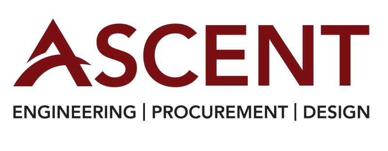

Project Engineer
Ascent Consulting · Calgary, Alberta · Engineering Consulting
Context
I worked as a Project Engineer at Ascent Consulting in Calgary, Alberta, in a customer-facing consulting environment supporting engineering and infrastructure projects. The role involved end-to-end work through execution, from early problem definition and requirements gathering to coordinating delivery with internal teams and external stakeholders.
Projects often began with loosely defined requirements and competing priorities, requiring strong problem framing and clear communication to move work forward while balancing customer expectations with technical and delivery constraints.
Goals
The goal of my work was to help clients move from loosely defined problems to executed solutions. This involved clarifying requirements early, translating customer needs into technical scope, and structuring projects in a way that enabled effective delivery through execution.
A key objective was managing alignment across clients, internal teams, and external stakeholders as work progressed. I focused on setting clear expectations around scope, timelines, and tradeoffs, ensuring that technical solutions reflected both what clients wanted and what could realistically be delivered.
Ultimately, success meant not just delivering a solution, but ensuring clients understood the decisions being made along the way and felt confident in how their problems were being addressed throughout execution.
How I Worked
I started each engagement from the client's perspective, focusing on understanding the problem they were trying to solve and the constraints they were operating within. Early in the process, I organized site visits to observe existing conditions, map current workflows, and build a practical understanding of the project context before any solution work began.
From there, I translated this understanding into initial design concepts and iterated with clients to refine requirements before handing designs off to drafting teams. I maintained close communication through weekly client check-ins and structured design reviews at key milestones, including 30%, 60%, and 90% stages, to ensure alignment and incorporate feedback before progressing further.
As projects moved into execution, I coordinated vendor engagement and procurement — Requests for Quotation (RFQs) and Requests for Proposal (RFPs) — and worked with clients to select equipment that balanced technical fit and cost. I then supported execution by coordinating equipment delivery and staying in close contact with construction teams on site.
Key Decisions & Tradeoffs
One of the most consistent judgment calls in client engagements was determining when designs were ready to move forward versus when further iteration was necessary. Locking scope too early risked missing important client context uncovered during site visits, while leaving requirements too open created downstream execution risk. I focused on establishing enough clarity to move forward while preserving flexibility to incorporate feedback at key milestones.
Another tradeoff involved balancing client preferences with technical and cost constraints. Clients often had strong views on design direction or equipment selection, which needed to be evaluated against feasibility, budget, and constructability. This required framing options clearly, outlining implications, and guiding decisions without losing client trust or momentum.
Throughout execution, I also navigated the tradeoff between responsiveness and scope control. Addressing changes quickly was important to maintaining strong client relationships, but it was equally critical to manage impacts to schedule and cost.
Impact
I helped drive projects from early definition through execution by maintaining alignment across design, procurement, and construction phases. Through three formal design review milestones (30%, 60%, and 90%) and weekly client check-ins, projects progressed with clear expectations and fewer late-stage surprises.
Across multiple client engagements totaling $5M in project value, I supported execution by coordinating vendor procurement through RFQs and RFPs, organizing equipment delivery to site, and staying in close contact with construction teams during build-out. This ensured issues were surfaced early, decisions were made with full context, and work advanced according to schedule.
What This Role Shaped
This role strengthened how I operate in customer-facing, execution-driven environments, particularly the importance of clear communication, iterative alignment, and disciplined follow-through. Working end-to-end through execution reinforced how early problem framing and expectation management directly shape delivery outcomes.
It also sharpened my ability to balance customer needs, technical constraints, and delivery realities while keeping projects moving forward — a foundation that later informed how I approached more complex product and operational challenges.